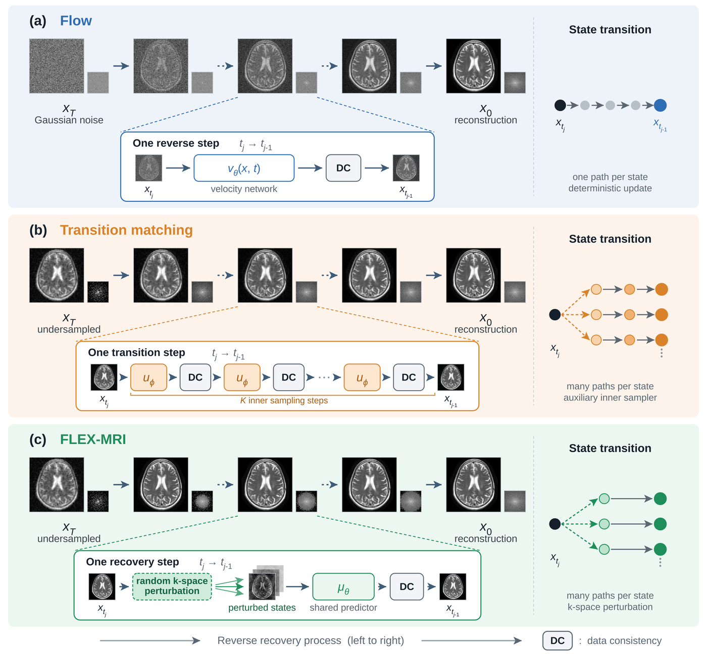

PAPER STUDY 03 / ACCELERATED MRI
把恢复轨迹
切成十段。
扩散与 flow 模型学习的是“一小步怎么走”，少步采样只能拿细尺度的动力学去近似大步，步子一大画质就掉。FLEX-MRI 换了学习尺度：直接把恢复过程切成长短固定的有限区间，把每个区间上的重建变化当作训练目标；再在推理时随机抠掉一部分 k 空间系数，让同一段能走出不同结果，最后用数据一致性把已采集的测量压回去——不需要第二个生成器。
本站重绘示意，不是论文原图，也不代表任何实测数值。
icon-lab/FLEX-MRI（MIT，核查提交 95f1771，2026-10-12）。见来源清单 →为什么少步一定会掉质量？
要把一张欠采样的 MRI 图恢复成清晰图，生成式方法沿着一条“恢复轨迹”走：从某个远端状态出发，一步步走到目标图像。扩散模型在这条轨迹上放了很多中间状态，每一次只走一点点，因此每一步都很稳，代价是推理时要顺序跑上千次网络——Table V 给出的实测是 DDPM 37.12 秒、FDB 59.09 秒一张切片。少步采样把状态数压下来，但它是用细尺度上学到的动力学去近似大跨度的变换：步子越大，反向核的高斯近似越不准，保真度就掉在这一点上。论文 §II-A、§II-B
少步还有第二个麻烦：被省掉的中间状态并不会消失。同一个当前状态，本来可以走到好几个都合理的下一点；省略中间状态之后，这些变化必须由保留区间自己的“残差”来承担（论文 Eq.3 把一次增量拆成平均位移 d 加上残差 r）。flow 类模型给定当前状态只给一个传输方向，因此通常沿一条确定性路径走，早先一步的错误会被后面的步骤继承下去。
已有的“换学习尺度”做法是过渡匹配（Transition Matching, NeurIPS 2025）：直接建模每个保留区间上的条件映射。但论文指出它有两个短板：为了表达过渡级变化，它在每个有限过渡内部塞了一个辅助生成采样器（多步内部采样），把省下来的计算又吃回去了；而且它用源/目标端点之间的线性插值定义中间状态，这对 MRI 并不成立——k 空间采集本质是“采或不采”的二值掩码，中间的欠采样模式无法由“欠采样数据与全采样数据连续取平均”表示。论文 §II-C
细尺度的路线（扩散 / flow / 过渡匹配）
学到的是局部动力学；推理时的大步是从局部近似出来的，随机性来自额外的生成采样器或辅助过程。优势是通用、先验成熟，代价是步数或额外采样开销。
有限过渡的路线（本文）
保留状态与过渡目标都从 MRI 采集过程本身推导；推理时执行的有限过渡，就是训练时被直接监督的那件事。代价是需要自己定义状态的间距，并在推理时引入一个扰动率 γ。

把恢复轨迹切成有限几段
先把轨迹写清楚。原论文的任务对齐设定里，欠采样端点 x_T 与全采样 x_0 之间有 T 个中间状态；细离散时 T 很大（几百到上千），相邻状态很像，一次网络评估只需要估计很小的变化。少步恢复只保留其中一小部分状态：t_J > t_{J-1} > … > t_0 = 0，且 1 ≤ J ≪ T。每一段 t_j → t_{j-1} 上的恢复增量就是“两个状态之差”。论文 Eq.1–2
关键的一步是把这个增量拆成两部分：平均位移 d（给定当前状态下的条件期望）和残差 r（剩下的那一部分）。因为保留状态本身保持了已采集的系数，所以增量的 k 空间投影为零，残差也就落在“测量没有约束那些自由度”的零空间里。论文 Eq.3–6
- Δ
- 从保留状态 t_j 到 t_{j-1} 的恢复增量。
- d
- 条件期望，也就是“确定性的那一部分”：只要知道当前状态，它就被决定。
- r
- 残差。省略的中间状态带来的多种可能，被压进这一项里。
- A r = 0
- 残差落在测量零空间：它不会改变任何已经采到的系数。
接下来 FLEX-MRI 用自己的方式定义这些状态。它不做线性插值，而是构造一条渐进抠掉 k 空间系数的前向过程：对每个未采集位置 i 抽一个独立的优先级 ρ_i ~ U(0,1)，沿轨迹抬高阈值 ν_t，凡是优先级低于阈值的位置就被丢掉。论文 Eq.7–8
- Ω / Ω̄
- 欠采样端点已经采到的位置 / 其余未采集的位置。Ω 里的系数在整个前向过程中始终保留。
- ρ_i
- 每个未采集位置自己的随机优先级，一旦抽定就不再变化。
- ν_t
- 移除阈值，沿轨迹从 0 升到 1；阈值等距意味着每步被丢掉的系数个数固定。
把相邻两个状态的掩码相减，就得到这一段刚刚新丢掉的那批系数，也就是过渡掩码 η_j；而这一段真正要预测的图像变化是 Δ⁰_j——它等于“过渡掩码作用在全采样 k 空间上”再变换回图像。论文 Eq.9–11
- η_j
- 过渡掩码：这一段新丢掉的系数集合（在 Ω̄ 上）。
- a_j
- 阈值之差 ν_{t_j} − ν_{t_{j-1}}，也就是每个未采集系数在这一段被选中的概率。
亲手试一下：扰动率 γ 改变的是“分叉”，不是轨道
INTERACTIVE / SCHEMATIC下面的曲线是示意，不是任何实测轨迹：它画的是论文 §III-B2 的机制——在每一次有限过渡前，对当前估计的 k 空间系数做一次伯努利扰动（每个位置以概率 γ 被剔除），同一个预测器于是从一个状态分叉出若干个可能的下一状态，随后由数据一致性约束回测量。拖动滑杆看分叉如何随 γ 变化；论文全轨迹固定使用 γ = 0.1。
占位。
训练：掩码只定义目标，不限制监督范围
最直接的训练目标是把预测和 Δ⁰_j 的差别限制在过渡掩码选中的那批系数上（论文把这一版写成 L_FT，Eq.12）。FLEX-MRI 的做法是把掩码从误差项里拿掉：目标仍然由掩码生成，但预测误差在整个 k 空间上评估（Eq.13）。由于这里用的是酉傅里叶变换，帕塞瓦尔定理让频域写法等价于图像域写法。论文 §III-B1，Eq.12–13
- 与 Eq.12 的差别
- Eq.12 在误差项里多乘了一个 η_j，也就是“只对这一段新丢掉的系数负责”；Eq.13 去掉了它。
- 为什么可以去掉
- 每个 realization 用的过渡掩码都不同，预测器无法把“第 j 段”钉在某一批固定系数上（Eq.14–15）。
为什么这个改动有用？如果误差只在新丢掉的那批系数上算，预测器只需要对“当前这批”负责；去掉限制后，它必须在整幅图上都给出正确的过渡，于是学到的是过渡本身，而不是某一次抽样的掩码。论文还用了一个组合论证：L 次独立前向实现中，某个系数至少被选中一次的概率是 1 − (1 − a_j)^L，随 L 增大趋近于 1——也就是每个过渡最终都会在覆盖整个未采集 k 空间的不同目标上被学习。
推理：把随机性打进 k 空间
只做训练上的松弛还不够：给定一个固定的当前状态，μ_θ 仍然只输出一个结果，从固定端点出发就会沿同一条轨迹走到底，残差 r 依然是零。FLEX-MRI 的解法是在每次预测之前先扰动当前估计：对它的 k 空间系数做伯努利欠采样，且扰动覆盖整个 k 空间（包含已采集的 Ω），被扰动的已采集系数随后由数据一致性恢复。论文 §III-B2，Eq.16–19
- γ_j
- 扰动率：每个 k 空间位置被剔除的概率。论文全轨迹固定取 0.1。
- 覆盖范围
- 与训练掩码不同，这里的扰动也作用于已采集的 Ω 区间，所以它会破坏数据一致性——这正是下一步要修的东西。
- y
- 实测的欠采样 k 空间数据；A 是包含线圈灵敏度的编码算子。
- Π_y
- 数据一致性投影。它把结果拉回到“与已测数据一致”的集合上。
最后论文要回答的问题是：这个残差在穿过预测器和数据一致性之后，会不会被抹平？论文 §III-B3，Eq.20–30
做法是把预测器在当前状态附近做局部线性化（斜率矩阵 M_j = I + ∂μ_θ/∂x），把扰动写成协方差，再让数据一致性作用上去。由于扰动同时落在 Ω 与 Ω̄ 上、两部分独立，协方差可以拆成两项。
- P_N
- 到测量零空间的投影算子，等于 I − A†A。
- J_j
- 预测器 Jacobian，M_j = I + J_j。
- 两项都半正定
- 第一项只有在 P_N J_j ≡ −I 时才可能为零，这对几乎所有的预测器 Jacobian 都不成立（该约束是一个 Lebesgue 测度为零的真仿射子集）；第二项在预测器把已采集系数的扰动映射到未采集系数上时额外给出正贡献。
证据与消融
实验用两个公开多线圈数据集：高场的 fastMRI（T1/T2/FLAIR，受试者划分 240/60/120，共 12,600 个横断面，几何线圈压缩到 5 个虚拟线圈）与低场 0.3 T 的 M4Raw（划分 128/30/25，共 9,000 个横断面，原生 4 通道）。两者都用二维回顾式欠采样，加速倍数 R = 4–8，normal density 掩码，线圈灵敏度用 ESPIRiT 在中心标定区估计，逐横断面重建。论文 §IV-A
对比方法共九个：LORAKS（低秩）、rGAN（对抗），扩散类的 DDPM / DiffRecon / CDiffMR / FDB（均为 T=1000），少步的 FLOWER / UPMRI（T=10）与过渡匹配 DTM（T=50）。所有方法共用同一套数据划分与欠采样模式，差异用 Wilcoxon signed-rank 检验。
TABLE II / III / IV · PUBLISHED VALUES
PSNR (dB) · 条形以 0 为起点
条形按论文原表转录绘制，本站未复现。每一组给出 R=4 / 6 / 8 三个加速倍数下的 PSNR；SSIM 见下方原表。
fastMRI 与 M4Raw 的横断面总数（划分分别为 240/60/120 与 128/30/25 名受试者）。
评测的加速倍数；训练掩码的加速在 [2, 8] 内逐样本随机。
保留过渡数与扰动率，论文正文给出的 FLEX-MRI 配置。
论文对“FLEX-MRI 在三个数据集设定上取得最高 PSNR/SSIM”的显著性陈述。
| 方法 | R=4 PSNR | R=4 SSIM | R=6 PSNR | R=6 SSIM | R=8 PSNR | R=8 SSIM |
|---|---|---|---|---|---|---|
| LORAKS | 35.2 ± 2.3 | 92.0 ± 4.8 | 33.5 ± 2.2 | 90.5 ± 5.2 | 32.3 ± 2.2 | 89.5 ± 5.4 |
| rGAN | 35.9 ± 2.8 | 93.1 ± 4.7 | 33.9 ± 2.6 | 90.7 ± 5.5 | 32.9 ± 2.8 | 90.1 ± 5.9 |
| DDPM | 36.1 ± 2.2 | 93.7 ± 4.0 | 34.8 ± 2.3 | 92.2 ± 5.2 | 34.0 ± 2.2 | 91.1 ± 4.9 |
| DiffRecon | 35.7 ± 2.3 | 93.6 ± 4.5 | 34.5 ± 2.2 | 92.1 ± 5.1 | 33.7 ± 2.2 | 91.0 ± 5.5 |
| CDiffMR | 31.4 ± 2.7 | 78.5 ± 8.1 | 31.2 ± 2.4 | 79.1 ± 7.2 | 31.2 ± 2.3 | 80.5 ± 7.4 |
| FDB | 37.4 ± 2.3 | 94.3 ± 3.9 | 35.9 ± 2.4 | 92.7 ± 5.2 | 35.0 ± 2.2 | 91.5 ± 4.9 |
| DTM | 30.2 ± 1.4 | 75.9 ± 4.9 | 29.2 ± 1.3 | 72.9 ± 5.3 | 28.7 ± 1.3 | 71.2 ± 5.5 |
| FLOWER | 33.8 ± 2.5 | 84.5 ± 6.1 | 33.4 ± 2.3 | 84.6 ± 6.0 | 33.1 ± 2.2 | 84.9 ± 6.0 |
| UPMRI | 36.6 ± 2.1 | 93.8 ± 4.3 | 34.2 ± 2.4 | 89.7 ± 7.7 | 31.9 ± 2.9 | 82.7 ± 11.7 |
| FLEX-MRI | 38.2 ± 2.5 | 94.5 ± 4.3 | 36.7 ± 2.3 | 93.5 ± 4.7 | 35.8 ± 2.2 | 92.7 ± 5.0 |
| 方法 | R=4 PSNR | R=4 SSIM | R=6 PSNR | R=6 SSIM | R=8 PSNR | R=8 SSIM |
|---|---|---|---|---|---|---|
| LORAKS | 22.4 ± 1.6 | 76.3 ± 2.7 | 22.2 ± 1.6 | 74.2 ± 2.0 | 22.0 ± 1.6 | 72.9 ± 3.3 |
| rGAN | 22.5 ± 1.6 | 68.1 ± 2.5 | 22.4 ± 1.6 | 67.1 ± 2.7 | 22.3 ± 1.5 | 66.5 ± 2.7 |
| DDPM | 22.1 ± 1.2 | 41.2 ± 4.7 | 21.7 ± 1.1 | 38.5 ± 4.6 | 21.5 ± 1.1 | 36.9 ± 4.5 |
| DiffRecon | 22.9 ± 1.3 | 46.1 ± 5.0 | 22.7 ± 1.3 | 43.8 ± 4.8 | 22.5 ± 1.3 | 42.4 ± 4.7 |
| CDiffMR | 16.7 ± 1.2 | 34.6 ± 2.1 | 16.7 ± 1.2 | 34.5 ± 2.4 | 16.5 ± 1.1 | 34.0 ± 2.2 |
| FDB | 17.7 ± 1.1 | 44.3 ± 5.1 | 16.6 ± 1.1 | 44.1 ± 4.9 | 16.0 ± 1.1 | 44.0 ± 4.8 |
| DTM | 20.4 ± 1.1 | 48.3 ± 4.7 | 19.8 ± 1.1 | 45.4 ± 4.9 | 19.5 ± 1.1 | 44.1 ± 4.9 |
| FLOWER | 23.1 ± 1.4 | 55.3 ± 3.5 | 22.7 ± 1.4 | 54.2 ± 3.4 | 22.5 ± 1.3 | 54.2 ± 3.5 |
| UPMRI | 23.3 ± 1.6 | 67.1 ± 9.8 | 21.3 ± 1.7 | 53.4 ± 10.6 | 20.2 ± 1.6 | 47.3 ± 9.9 |
| FLEX-MRI | 23.9 ± 1.6 | 76.9 ± 2.5 | 23.5 ± 1.5 | 75.1 ± 2.8 | 23.2 ± 1.5 | 74.3 ± 3.0 |
| 方法 | R=4 PSNR | R=4 SSIM | R=6 PSNR | R=6 SSIM | R=8 PSNR | R=8 SSIM |
|---|---|---|---|---|---|---|
| LORAKS | 35.2 ± 2.3 | 92.0 ± 4.8 | 33.5 ± 2.2 | 90.5 ± 5.2 | 32.3 ± 2.2 | 89.5 ± 5.4 |
| rGAN | 33.5 ± 2.1 | 90.5 ± 2.9 | 31.6 ± 2.2 | 87.8 ± 3.5 | 30.4 ± 2.3 | 85.9 ± 3.9 |
| DDPM | 35.0 ± 2.3 | 89.6 ± 4.9 | 33.1 ± 2.2 | 86.0 ± 5.8 | 31.9 ± 2.2 | 83.3 ± 6.2 |
| DiffRecon | 35.5 ± 2.0 | 93.1 ± 3.4 | 33.3 ± 2.1 | 90.9 ± 4.0 | 31.9 ± 2.1 | 89.3 ± 4.3 |
| CDiffMR | 35.0 ± 1.7 | 91.5 ± 3.3 | 33.0 ± 1.6 | 87.6 ± 3.9 | 31.4 ± 1.5 | 83.9 ± 4.3 |
| FDB | 18.0 ± 5.6 | 56.7 ± 14.6 | 15.6 ± 3.1 | 54.6 ± 9.9 | 15.0 ± 2.5 | 56.2 ± 8.6 |
| DTM | 33.2 ± 1.9 | 87.3 ± 3.9 | 31.6 ± 1.8 | 84.3 ± 4.5 | 30.6 ± 1.7 | 82.2 ± 4.9 |
| FLOWER | 35.7 ± 2.2 | 91.0 ± 4.1 | 34.1 ± 2.1 | 88.8 ± 4.6 | 33.1 ± 1.9 | 87.3 ± 4.9 |
| UPMRI | 34.5 ± 1.7 | 92.8 ± 3.2 | 32.3 ± 1.7 | 90.2 ± 3.8 | 30.7 ± 1.7 | 87.2 ± 4.6 |
| FLEX-MRI | 37.6 ± 2.3 | 94.2 ± 3.3 | 35.9 ± 2.1 | 93.1 ± 3.7 | 34.8 ± 1.9 | 92.2 ± 3.9 |
| 方法 | LORAKS | rGAN | DDPM | DiffRecon | CDiffMR | FDB | DTM | FLOWER | UPMRI | FLEX-MRI |
|---|---|---|---|---|---|---|---|---|---|---|
| 时间 (s) | 0.180 | 0.0056 | 37.12 | 36.26 | 34.03 | 59.09 | 0.437 | 0.477 | 0.318 | 0.349 |
| 显存 (GB) | 0.05 | 0.13 | 1.72 | 1.71 | 2.23 | 3.19 | 1.05 | 1.05 | 1.05 | 1.05 |
亲手试一下：消融里到底哪一步值钱
INTERACTIVE / TABLE VITable VI 的八行来自三种开关的全组合：推理模式（Stochastic / Deterministic）、过渡支撑（Relaxed / Restricted）、训练输入（Nominal / Perturbed）。点选任意组合，右侧给出该行的 PSNR/SSIM 以及与最佳行的差。
推理模式
过渡支撑
占位。
亲手试一下：保留过渡数 J 的取舍
INTERACTIVE / FIG. 5论文在 Fig. 5 里画了 J 从 2 到 1000（对数轴）的画质曲线，峰值在 J=10。这里给出三个锚点：J=10 是 Table II 在 fastMRI R=8 上的实测值（PSNR 35.8 / SSIM 92.7）；J=2 与 J=1000 由论文正文报告的相对差值（分别低 1.7 dB / 1.1% 与 2.3 dB / 7.8%）换算得到，用斜纹标示；中间的值论文没有给出数值表，因此本站不外推。右侧“网络评估次数”等于 J 本身，是定义而非测量。
占位
论文对机制的解释：过渡更少时，单次预测要承担更大的平均位移与更强的残差变化；过渡更多时，扰动事件变多、每次过渡的恢复更新变小，预测误差还会在更长的序列上累积。推理成本又大致随 J 线性增长，所以 J=10 是画质与成本之间的折中。
今天你就能跑到的东西
官方仓库 icon-lab/FLEX-MRI 是 MIT 许可的完整 PyTorch 实现，包含训练、重建、评测三段入口，还额外提供了 ESPIRiT 线圈图的缓存脚本。但它只实现了 M4Raw 这一条数据通路——论文里的 fastMRI 分支（几何线圈压缩到 5 个虚拟线圈等）在发布代码中没有对应实现，所以能直接复现的是 Table III 那一列。下面四条命令都摘自官方 README / 脚本，未在本站执行。
仓库许可（LICENSE 顶部即 “MIT License / Copyright (c) 2026 ICON Lab”），作者鼓励修改与分发但要引用论文。
训练迭代次数；每 25,000 次写一次检查点到 exp/，batch size 2、累计 8 次一个优化步。
train.py 训练、sample.py 重建、evaluate.py 对 reconstruction_rss 算 PSNR/SSIM。
1.
--transition_steps 训练与重建必须一致。README 用加粗句子写明它不是“可按加速倍数调”的参数；train.sh 与 test.sh 里各有一段注释解释：t 索引的是训练轨迹上的一个点，时间嵌入只在这些取值上被训练过，采样时换数量会改变每个 t 的含义。两侧默认都是 10。2. 训练前必须先建线圈图缓存。训练会跳过没有缓存线圈图的体数据；
precompute_coil_maps.py 支持按 phase/contrast 预计算，已存在的条目会跳过（除非 --overwrite），因此可以被打断后继续。3. 评测要用原始权重
model<step>.pt，不要用 EMA。官方说明：在 ema_rate=0.9999 下 EMA 大约落后 7,000 次迭代。① 推理时的随机探索没有开。
_stochastic_frequency_dropout 的文档字符串写明它只是训练期增强、默认 drop_rate=0.0；推理主循环 recovery_trajectory 里没有调用它，create_finite_transition() 也没有把 drop_rate 透传出去，命令行里没有对应开关。论文 Eq.16–19 的扰动路径要自己接上（γ 也未在代码中出现）。② 训练目标的形式不同。论文目标是“本段新丢掉的那批系数”对应的图像变化；发布代码回归的是到全采样图像的整段剩余跳跃，用图像域 L1 且乘 10（代码注释解释了原因：回归两个随机掩码版本之差不可学）。
③ 前向状态的构造不同。代码用的是
x_zf 与 x_0 的线性插值再逐状态做数据一致性，而论文是随机优先级 ρ_i 与阈值 ν_t 决定的渐进 k 空间抠除——而线性插值正是论文批评过渡匹配的地方。你应该从它带走什么？
这篇论文最可迁移的不是某个网络结构，而是一个尺度选择的论证方式：当推理预算被限定在很少的步数上，与其让模型从更细的动力学里去近似大步，不如把大步本身变成训练目标；而一旦步子变大，被省略的中间状态带来的“多解性”就必须显式表达出来——这里的做法是用与训练同构的随机 k 空间扰动，把随机性零成本地注入推理。
它的边界也很清楚：监督训练、二维笛卡尔采集、R=4–8、需要全采样参考；论文自己把非笛卡尔采样、体数据重建、自适应扰动率与状态间距、超越局部线性化的协方差分析、以及自监督/多机构设置都列为未来工作；并明确提醒失真指标无法判断随机重建是否保留诊断相关结构。
如果 γ_j 沿轨迹变化（早期多扰动、后期少扰动），
同一个 J 能换到多少画质？
下面是本站从已核验内容里推出的可检验切口，属于研究机会推断，尚未做新颖性检索，也不代表原作者结论。共同点是：都能用公开数据（M4Raw 在 Zenodo 上为 CC-BY-4.0）与已发布代码先做小规模验证。
- 先把发布代码里的随机探索接回来。这是最低成本、也是最必要的一步：按论文 Eq.16–19 在
recovery_trajectory里加入扰动并在配置中暴露 γ，然后复现 Table VI 的四行（Stochastic/Deterministic × Relaxed/Restricted）。没有这一步，仓库跑出来的是消融表里的 Deterministic 行。 - 让 γ_j 与状态间距自适应。论文 §VI 明确提出这个方向：未解决信息量与结构会随恢复推进而变化。可以先做一条最简单的对照——恒定 γ=0.1 vs 线性下降 γ_j，看同一个 J 下的画质与多轨迹一致性。
- 把协方差分析推离局部线性化。Eq.30 的结论依赖 M_j 的局部线性化。可以用拟合的局部 Jacobian 或经验协方差去检验“残差非退化”在大扰动率（例如 γ=0.3 以上）下是否仍成立，这既是理论补全也是实用边界。
- 用轨迹间差异做不确定性图。论文自己指出这一可能：同一份测量跑多次重建就得到一族结果。可以检验“轨迹间方差”与重建误差的空间相关性，并与后验采样类方法比较——注意论文提醒必须配放射科评估，失真指标不够。
- 把前向过程换成论文 Eq.7–8 的构造再对齐一次。发布代码用的是线性插值状态，与论文的渐进 k 空间抠除不同。改回随机优先级构造后，正好可以检验“k 空间支撑的渐进变化”这一说法本身贡献了多少增益。
- 扩到非笛卡尔与体数据。论文把两者都列为未来工作。需要新的编码算子与数据一致性（把 Π_y 换成非均匀 FFT 下的投影），这是把方法推到真实采集协议上的必经一步。
合上论文前，检查自己真的懂了没有
01 / 为什么“支撑松弛”只去掉掩码的一部分作用？
过渡掩码在论文里做两件事：定义训练目标 Δ⁰_j（哪批系数是这一段新丢掉的），以及限定预测误差在哪些系数上评估。Eq.12 两者都保留，Eq.13 只去掉后者。所以掩码仍然决定“学什么”，只是不再决定“在哪里比较”。消融里这一步值 0.8 dB PSNR（35.0 → 35.8）。
02 / 推理时的随机性是从哪来的？为什么不花钱？
来自对当前估计的 k 空间系数做伯努利扰动（每个位置以概率 γ 被剔除），扰动后的状态再交给同一个预测器，随后由数据一致性把已采集的测量压回去。它不引入第二个网络、不需要内部采样循环，也不需要辅助生成采样器——这正是与过渡匹配 DTM 的核心差别。代价是每一步的输入都带有被故意破坏的已采集系数，需要靠 Π_y 复原。
03 / 论文凭什么说残差不会退化成零？
把预测器在当前状态附近线性化后，输出协方差可以拆成两项（Eq.30）。第一项要为零，需要 P_N J_j ≡ −I，而这把 Jacobian 限制在一个 Lebesgue 测度为零的真仿射子集上，因此对几乎所有的预测器都不成立；第二项在已采集系数的扰动被映射到未采集系数时给出额外正贡献。结论对 0 < γ_j < 1 成立——但前提是局部线性化这个近似。
04 / 为什么 J=10 最好，而不是越小越好或越大越好？
过渡更少时，一次预测要承担更大的平均位移与更强的残差变化（J=2 比 J=10 低 1.7 dB / 1.1%）；过渡更多时，扰动事件变多而每次过渡的恢复更新变小，预测误差还会在更长的序列上累积（J=1000 比 J=10 低 2.3 dB / 7.8%）。推理成本又大致随 J 线性增长，于是 J=10 成为折中。
05 / 想复现这张表，第一个会绊倒你的是什么？
三件事按顺序：(1) --transition_steps 训练与重建必须一致，否则每个 t 的含义都变了；(2) 训练前必须先用 precompute_coil_maps.py 建好 ESPIRiT 线圈图缓存，否则体数据会被数据加载器跳过；(3) 发布代码里推理时的随机探索是关闭的，跑出来等于消融表的 Deterministic 行——要先把它接回来，才谈得上复现主表。
沿着证据，回到原文
论文事实、代码事实与本站解释分别标注。公式采用论文编号；页面示意图为本站重绘，不假充原文图。所有指标由已核验的原表转录；J=2 与 J=1000 的 PSNR/SSIM 由论文报告的相对差值换算，页面内已单独标示。
- 01 / arXiv 摘要页 ↗标题、作者、单位、摘要、提交日期（v1：2026-10-09）与学科分类 eess.IV。
- 02 / arXiv HTML 全文 ↗§I 动机与三条贡献；§II-A–C 相关工作；§III-A 有限过渡视角（Eq.1–6）；§III-B1–B3 支撑松弛学习、随机恢复、协方差传播（Eq.7–30）；§IV-A 数据与基线；§V 主结果、效率与两组消融；Table I–VI；Fig. 1–5；§VI 边界与未来工作。
- 03 / 官方仓库 icon-lab/FLEX-MRI（MIT，固定核查提交） ↗README 的
--transition_steps警告、只支持 M4Raw 的数据说明、线圈图缓存流程、--resume_checkpoint断点续训、RSS/SENSE 口径与 EMA 提示均出自此文件；train.sh/test.sh/precompute_coil_maps.py/utils/finite_transition.py提供命令与实现事实（含drop_rate未透传、损失为图像域 L1、前向状态为线性插值这三点差异）。 - 04 / M4Raw 数据集（Zenodo，CC-BY-4.0） ↗官方 README 指定的下载入口：
M4RawV1.5_multicoil_train/val.zip与M4Raw_multicoil_test.zip。 - 05 / M4Raw 代码与说明 ↗多对比、多次重复、多通道的 0.3 T 脑部 k 空间数据集（Lyu 等, Scientific Data 10, 2023）。
- 06 / 本站标注J=2 的 34.1 dB / 91.6% 与 J=1000 的 33.5 dB / 84.9% 由论文正文报告的相对差值（−1.7 dB / −1.1%，−2.3 dB / −7.8%，均相对 J=10 在 fastMRI R=8 的 35.8 dB / 92.7%）换算得到；论文 Fig. 5 只给曲线与两端差值，未给中间点数值表。页面中的轨迹与分叉图为机制示意，不含任何实测数据。
核查日期 2026-10-13。本站未运行官方代码、未训练、未重建、未复现任何指标；上表所有数字都是论文原表数值。